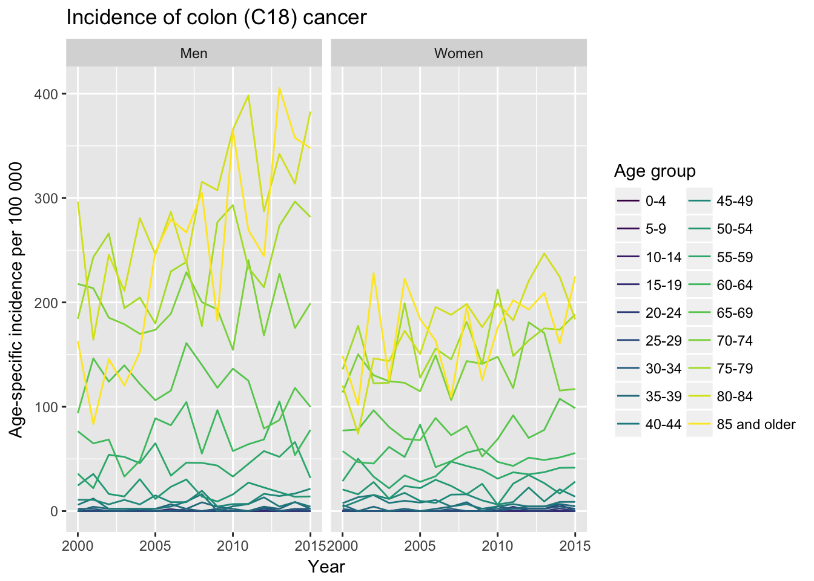
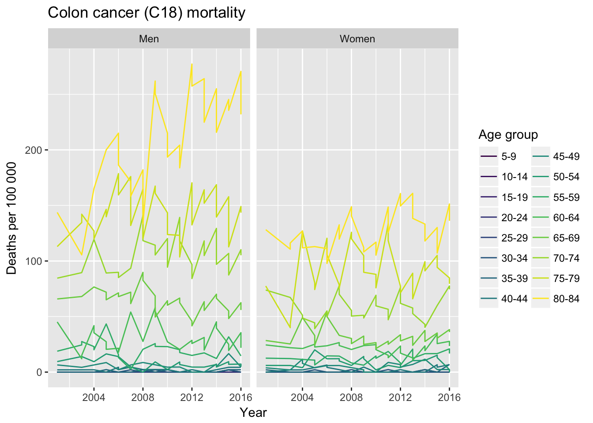
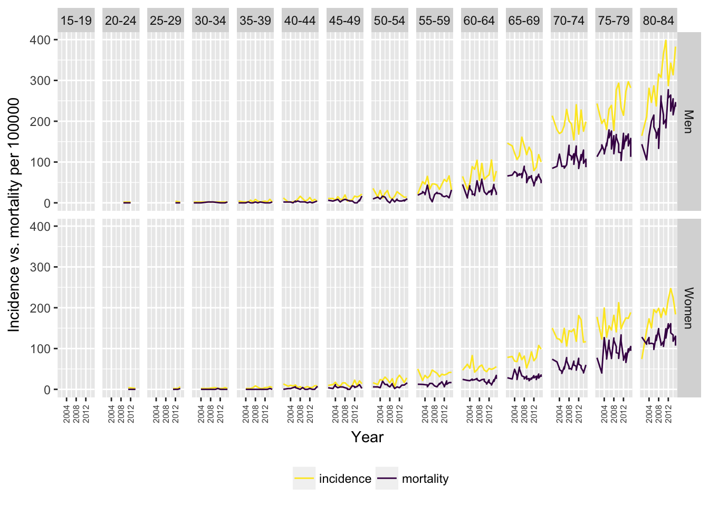

The aim of the vignette is to give some basic idea about the workflow when accessing TAI datasets Estonian Health Statistics and Health Research (TAI) via boulder package.
Data tables available on TAI database are listed in the data frame generated by get_all_tables() function. By default, datasets table is loaded from a local copy supplied with the package (local = TRUE). Set argument local = FALSE to download fresh list of tables from TAI.
Table columns Database and Node describe table address in the database tree. Database names are available only in Estonian.
Updated and url contain date of the last update and data table url, respectively.
library(dplyr)
library(stringr)
library(tidyr)
library(ggplot2)
library(viridis)
library(boulder)
tabs <- get_all_tables(lang = "en")
tabs
#> # A tibble: 1,688 x 6
#> Database Node Name Title Updated url
#> <chr> <chr> <chr> <chr> <chr> <chr>
#> 1 01Rahvastik Abortions RK01 Abortio… 2017-06… http:…
#> 2 01Rahvastik Abortions RK11 Abortio… 2017-11… http:…
#> 3 01Rahvastik Abortions RK20 Abortio… 2017-06… http:…
#> 4 01Rahvastik Abortions RK30 Abortio… 2017-06… http:…
#> 5 01Rahvastik Abortions RK40 Abortio… 2017-06… http:…
#> 6 01Rahvastik Abortions RK50 Use of … 2017-06… http:…
#> 7 01Rahvastik Abortions RK61 Legally… 2017-06… http:…
#> 8 01Rahvastik Abortions RK62 Abortio… 2017-06… http:…
#> 9 01Rahvastik Abortions RK63 Abortio… 2017-06… http:…
#> 10 01Rahvastik Births and breastfed infants SR01 Live bi… 2017-10… http:…
#> # ... with 1,678 more rowsFind tables with cancer incidence and mortality data. Table info is stored in Title column. For better matching we convert Title column to lower case.
Cancer morbidity data is stored under Malignant neoplasms node.
tabs %>%
mutate(descr = str_to_lower(Title)) %>%
filter(str_detect(descr, "neoplasm")) %>%
select(Name, Title, Node, Updated) %>%
knitr::kable()| Name | Title | Node | Updated |
|---|---|---|---|
| PK10 | New cases of malignant neoplasms by specified site, sex and age group | Malignant neoplasms | 2017-12-13T22:52:47 |
| PK20 | New cases of malignant neoplasms by specified site, sex and county | Malignant neoplasms | 2017-12-13T21:27:14 |
| PK30 | Age-specific incidence rate of malignant neoplasms per 100 000 inhabitants by site and sex | Malignant neoplasms | 2017-12-13T22:55:51 |
| PK40 | Incidence rate of malignant neoplasms per 100 000 inhabitants by specified site, sex and county | Malignant neoplasms | 2017-12-13T21:26:14 |
We are interested in table PK30: Age-specific incidence rate of malignant neoplasms per 100 000 inhabitants by site and sex.
pk30 <- pull_table("PK30", lang = "en")
pk30
#> # A tibble: 42,048 x 5
#> Year Site Sex `Age group` value
#> <chr> <chr> <chr> <chr> <dbl>
#> 1 2000 All malignant neoplasms (C00-C97) Men 0-4 18.5
#> 2 2000 All malignant neoplasms (C00-C97) Men 5-9 12.3
#> 3 2000 All malignant neoplasms (C00-C97) Men 10-14 11.1
#> 4 2000 All malignant neoplasms (C00-C97) Men 15-19 7.61
#> 5 2000 All malignant neoplasms (C00-C97) Men 20-24 25.8
#> 6 2000 All malignant neoplasms (C00-C97) Men 25-29 33.6
#> 7 2000 All malignant neoplasms (C00-C97) Men 30-34 36.3
#> 8 2000 All malignant neoplasms (C00-C97) Men 35-39 75.0
#> 9 2000 All malignant neoplasms (C00-C97) Men 40-44 143
#> 10 2000 All malignant neoplasms (C00-C97) Men 45-49 247
#> # ... with 42,038 more rowsLet’s see if we can find data for colon cancer incidence. Cancer anatomical site is stored under Site variable. Incidence values are available for 73 anatomical sites.
pk30 %>%
select(Site) %>%
distinct()
#> # A tibble: 73 x 1
#> Site
#> <chr>
#> 1 All malignant neoplasms (C00-C97)
#> 2 All malignant neoplasms except skin (other) (C00-C97, except C44)
#> 3 Lip, oral cavity and pharynx (C00-C14)
#> 4 ..Lip (C00)
#> 5 ..Tongue (C01-02)
#> 6 ..Gum, floor of mouth etc (C03-C06)
#> 7 ..Major salivary glands (C07-C08)
#> 8 ..Tonsil, oropharynx (C09-C10)
#> 9 ..Nasopharynx (C11)
#> 10 ..Piriform sinus, hypopharynx (C12-C13)
#> # ... with 63 more rowsAfter some digging, we can see that colon cancer is nested under Digestive organs (C15-C26): ..Colon (C18). Now we can pull out data for colon regular expression.
colo <- pk30 %>%
mutate_at("Site", str_to_lower) %>%
filter(str_detect(Site, "colon"))
colo
#> # A tibble: 576 x 5
#> Year Site Sex `Age group` value
#> <chr> <chr> <chr> <chr> <dbl>
#> 1 2000 ..colon (c18) Men 0-4 0
#> 2 2000 ..colon (c18) Men 5-9 0
#> 3 2000 ..colon (c18) Men 10-14 0
#> 4 2000 ..colon (c18) Men 15-19 0
#> 5 2000 ..colon (c18) Men 20-24 0
#> 6 2000 ..colon (c18) Men 25-29 0
#> 7 2000 ..colon (c18) Men 30-34 2.13
#> 8 2000 ..colon (c18) Men 35-39 0
#> 9 2000 ..colon (c18) Men 40-44 6.04
#> 10 2000 ..colon (c18) Men 45-49 10.8
#> # ... with 566 more rowsWe have incidence rates for different age groups for men and women from years 2000 to 2015. Let’s plot incidence (value) versus time (Year) to see if there are any changes in incidence rates during this time period. First we also need to convert Year from character to numeric and Age group to factor to keep its correct ordering.
colo %>%
mutate(Year = as.numeric(Year),
`Age group` = factor(`Age group`, levels = unique(colo$`Age group`)),
Site = gsub("^[.]+([a-z])", "\\U\\1", Site, perl = TRUE)) %>%
ggplot(aes(Year, value, group = `Age group`, color = `Age group`)) +
geom_line() +
facet_wrap(~ Sex) +
scale_color_viridis_d() +
guides(color = guide_legend(ncol = 2)) +
labs(title = "Incidence of colon (C18) cancer",
y = "Age-specific incidence per 100 000")
We can see that, as expected, cancer incidence is higher in older age groups (coloring) and colon cancer is generally higher in men. However, it is interesting that colon cancer incidence has been increasing in men during observed period.
Mortality data is stored under node Deaths.
tabs %>%
mutate(Node = str_to_lower(Node)) %>%
filter(str_detect(Node, "deaths"))
#> # A tibble: 15 x 6
#> Database Node Name Title Updated url
#> <chr> <chr> <chr> <chr> <chr> <chr>
#> 1 01Rahvastik deaths SD21 Deaths by cause, se… 2018-01-… http://pxweb.t…
#> 2 01Rahvastik deaths SD22 Deaths per 100 000 … 2017-05-… http://pxweb.t…
#> 3 01Rahvastik deaths SD23 Standardised mortal… 2017-05-… http://pxweb.t…
#> 4 01Rahvastik deaths SD30 Deaths by sex, caus… 2017-05-… http://pxweb.t…
#> 5 01Rahvastik deaths SD31 15 prevalent causes… 2017-05-… http://pxweb.t…
#> 6 01Rahvastik deaths SD40 Deaths from disease… 2017-05-… http://pxweb.t…
#> 7 01Rahvastik deaths SD41 Direct drug-related… 2017-05-… http://pxweb.t…
#> 8 01Rahvastik deaths SD50 Infant deaths by se… 2017-05-… http://pxweb.t…
#> 9 01Rahvastik deaths SD501 Infant deaths by ca… 2017-05-… http://pxweb.t…
#> 10 01Rahvastik deaths SD51 Perinatal deaths by… 2017-05-… http://pxweb.t…
#> 11 01Rahvastik deaths SD52 Perinatal deaths an… 2017-06-… http://pxweb.t…
#> 12 01Rahvastik deaths SD53 Stillbirths by caus… 2017-05-… http://pxweb.t…
#> 13 01Rahvastik deaths SD60 Amenable deaths to … 2017-11-… http://pxweb.t…
#> 14 01Rahvastik deaths SD61 Preventable deaths … 2017-05-… http://pxweb.t…
#> 15 01Rahvastik deaths DR90 Autopsies 2017-05-… http://pxweb.t…We are interested in table SD22 titled Deaths per 100 000 inhabitants by cause of death, sex and age group:
sd22 <- pull_table("SD22", lang = "en")
sd22
#> # A tibble: 99,960 x 5
#> Year `Cause of death` Sex `Age group` value
#> <chr> <chr> <chr> <chr> <dbl>
#> 1 1989 All causes (A00-Y89) Men Crude mortality rate 1186
#> 2 1989 All causes (A00-Y89) Men Standardised mortality rate NA
#> 3 1989 All causes (A00-Y89) Men 0 1775
#> 4 1989 All causes (A00-Y89) Men 1-4 125
#> 5 1989 All causes (A00-Y89) Men 5-9 74.1
#> 6 1989 All causes (A00-Y89) Men 10-14 60.0
#> 7 1989 All causes (A00-Y89) Men 15-19 165
#> 8 1989 All causes (A00-Y89) Men 20-24 214
#> 9 1989 All causes (A00-Y89) Men 25-29 223
#> 10 1989 All causes (A00-Y89) Men 30-34 324
#> # ... with 99,950 more rowsIt’s a relatively large table with 99960 rows. Let’s try to filter out colon and rectal cancer data using ICD codes. From incidence table we saw that this disease is placed under code C18.
mort <- sd22 %>%
mutate(`Cause of death` = str_to_lower(`Cause of death`)) %>%
filter(str_detect(`Cause of death`, "c18"))
mort
#> # A tibble: 2,352 x 5
#> Year `Cause of death` Sex `Age group` value
#> <chr> <chr> <chr> <chr> <dbl>
#> 1 1989 ....malignant neoplasm of colon and… Men Crude mortality… 8.19
#> 2 1989 ....malignant neoplasm of colon and… Men Standardised mo… NA
#> 3 1989 ....malignant neoplasm of colon and… Men 0 0
#> 4 1989 ....malignant neoplasm of colon and… Men 1-4 0
#> 5 1989 ....malignant neoplasm of colon and… Men 5-9 0
#> 6 1989 ....malignant neoplasm of colon and… Men 10-14 0
#> 7 1989 ....malignant neoplasm of colon and… Men 15-19 0
#> 8 1989 ....malignant neoplasm of colon and… Men 20-24 0
#> 9 1989 ....malignant neoplasm of colon and… Men 25-29 0
#> 10 1989 ....malignant neoplasm of colon and… Men 30-34 0
#> # ... with 2,342 more rowsLet’s filter out data before year 2000 and keep only age groups data. Mortality is accounted separately for under 1 year old babies. Anyway, for comparison, we are mostly interested in >40 year old age groups, as cancer incidence is generally very low in younger people. Filter by Year and Age group:
colo_mort <- mort %>%
filter(Year >= 2000,
`Age group` %in% colo$`Age group`,
!is.na(value))
colo_mort
#> # A tibble: 928 x 5
#> Year `Cause of death` Sex `Age group` value
#> <chr> <chr> <chr> <chr> <dbl>
#> 1 2001 ......malignant neoplasm of colon (c18) Men 5-9 0
#> 2 2001 ......malignant neoplasm of colon (c18) Men 10-14 0
#> 3 2001 ......malignant neoplasm of colon (c18) Men 15-19 0
#> 4 2001 ......malignant neoplasm of colon (c18) Men 20-24 0
#> 5 2001 ......malignant neoplasm of colon (c18) Men 25-29 0
#> 6 2001 ......malignant neoplasm of colon (c18) Men 30-34 0
#> 7 2001 ......malignant neoplasm of colon (c18) Men 35-39 0
#> 8 2001 ......malignant neoplasm of colon (c18) Men 40-44 2.02
#> 9 2001 ......malignant neoplasm of colon (c18) Men 45-49 6.47
#> 10 2001 ......malignant neoplasm of colon (c18) Men 50-54 9.49
#> # ... with 918 more rowsNow we can create similar plot as in case of incidence:
colo_mort %>%
mutate(Year = as.numeric(Year),
`Age group` = factor(`Age group`, levels = unique(colo_mort$`Age group`)),
`Cause of death` = gsub("^[.]+([a-z])", "\\U\\1", `Cause of death`, perl = TRUE)) %>%
ggplot(aes(Year, value, group = `Age group`, color = `Age group`)) +
geom_line() +
facet_wrap(~ Sex) +
scale_color_viridis_d() +
guides(color = guide_legend(ncol = 2)) +
labs(title = "Colon cancer (C18) mortality",
y = "Deaths per 100 000")
We can see that colon cancer deaths have shown considerable increase in 80-84 age group in men, whereas mortality among women has remained pretty much the same.
Cancer mortality can be considered as a proxy to treatment efficacy. Therefore, let’s put these two datasets side by side to get better visual at the gap between morbidity and mortality, and how deadly this disease really is in Estonia.
First, we need to merge incidence and mortality datasets:
c18 <- inner_join(
colo %>% select(-Site) %>% rename(incidence = value),
colo_mort %>% select(-`Cause of death`) %>% rename(mortality = value)
) %>%
filter(incidence != 0)
c18
#> # A tibble: 580 x 5
#> Year Sex `Age group` incidence mortality
#> <chr> <chr> <chr> <dbl> <dbl>
#> 1 2001 Men 30-34 2.10 0
#> 2 2001 Men 35-39 4.19 0
#> 3 2001 Men 40-44 12.1 2.02
#> 4 2001 Men 45-49 10.8 6.47
#> 5 2001 Men 50-54 35.6 9.49
#> 6 2001 Men 55-59 22.0 18.8
#> 7 2001 Men 60-64 64.9 45.1
#> 8 2001 Men 65-69 146 65.8
#> 9 2001 Men 70-74 214 84.6
#> 10 2001 Men 75-79 243 113
#> # ... with 570 more rowsNow we can plot colon cancer incidence versus mortality, but first we want to gather incidence and mortality values into common column for easier plot setup:
c18 %>%
mutate(Year = as.numeric(Year)) %>%
gather(key, value, -c("Year", "Sex", "Age group")) %>%
ggplot(aes(Year, value, color = key)) +
geom_line() +
facet_grid(Sex ~ `Age group`) +
scale_color_viridis_d(direction = -1) +
theme(axis.text.x = element_text(angle = 90, vjust = 0.5, size = 6),
legend.title = element_blank(),
legend.position = "bottom") +
labs(y = "Incidence vs. mortality per 100000")
Ok, this is how working with TAI data basically looks like – find your table and download it, whereas it’s advisable to compare downloaded table to the one available on TAI webpage. Downloaded tables may need lot of cleaning (e.g. to get rid of summary data rows), pay attention to variable names which are nicely human readable but contain whitespace, may contain apostrophes.